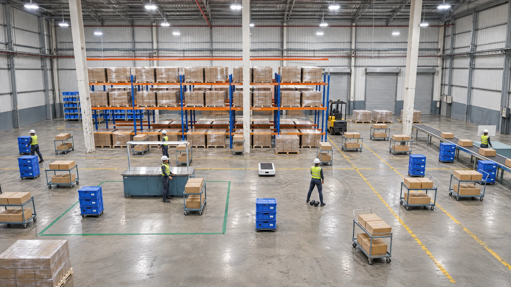
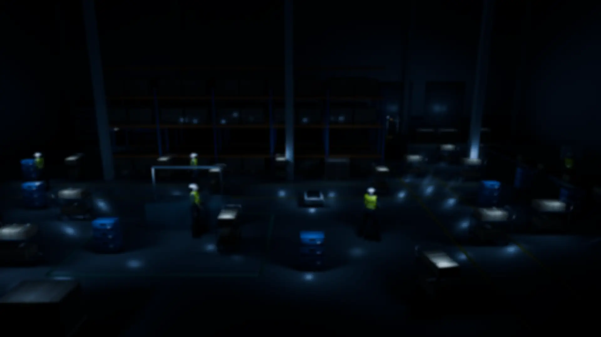

Where work is. Where it waits.
AmIMotion is spatial intelligence for factories and warehouses.


One trolley here has waited 42 minutes.
Can you tell which one? Pick the one you think it is.
A small tag on each one shows where it is.
Every trolley, bin, pallet, forklift, robot and person. Right now, typically to within 10 cm.
And how long it has waited.
There's your trolley. 42 minutes, at the end of the racks.
What has waited longest?
Trolley 14. End of the racks. 42 minutes.
You find out from a screen, not a walk.
Three parts work as one system.
Built on the FiRa and omlox specifications.
-
AmIGo tag
Screws or sticks onto the trolley. Sends a short UWB radio pulse when it moves and sleeps when it stops.
-
AmIMo anchor
Fixed to a column or wall 3 to 8 m up. Records when each pulse arrives and the angle it came from.
-
AmIHub
Works out where each tag is from those times and angles. Runs on an industrial PC inside your plant, with no internet needed.
Different floors. One live map.
Know moreDecades of shipping hardware. Now building for the factory floor.
-
Kaushal Kukkar
Founder and CEO
20 years in product development and business growth. Scaled products from 0 to 1 and led P&L across global markets.
-
Vivek Dham
CTO
22 years in hardware systems design and manufacturing. Deep expertise in RF, embedded and volume production.
-
Sumeer Bhatara
Head of Software
24 years in wireless product development. Shipped connectivity products across UWB, BLE and Wi-Fi stacks.
Start with one bay.
A pilot follows one flow in one bay or line. You choose the flow.
How a pilot runs
The pilot times today's waits first, over a window you choose. That is your baseline. Before it starts, we agree how to count a wait that runs past shift end. We also agree who on your team acts when work waits too long.
The pilot tags trolleys, bins and pallets, not people. Tagging people would be a separate project. It would need its own policy. You also set how long the map keeps its history.
You see your own waits in one bay, and prove the numbers, before you decide on more. Then grow plant-wide on the same AmIHub, without re-fitting the first bay. A second plant gets its own survey, and AmIHub can run both from one console.
What you buy
AmIGo tags, AmIMo anchors and AmIHub, plus our survey and an anchor plan for your floor. Designed and built in India, with local stock and local engineers on your site. One contract and one support line cover every layer. Your team or your integrator can build on it at any layer, through open interfaces. After the first call, we share datasheets, architecture, prices and pilot options under NDA. AmIMotion is led by Kaushal Kukkar, founder and CEO, and Vivek Dham, CTO.
Plan your first bay.
Six questions about how work moves in your plant. You get a plan for where to start, before anyone calls you.
Plan your first bay